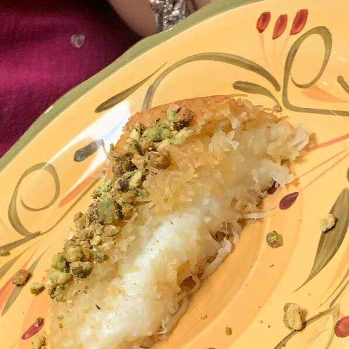

Kunafa Recipe
A favorite Palestinian dessert! Crunchy shredded phyllo dough is baked with a layer of creamy sweet cheese and then drenched in rosewater syrup.
It's simple yet impressive. The cheese filling is traditionally made from Nabulsi cheese that is desalted.
The ricotta-mozzarella mix is a great substitute, and lower-fat products can be used.
If you have access to a Middle Eastern grocery, you can probably find kanafa dye,
which turns the dough into the orange or reddish color that is the signature of kanafa.
- prep: 25 mins
- serves 8
- cook : 60 mins
Method
- Preheat an oven to 400 degrees F (200 degrees C).
- Use a food processor to finely chop the frozen, shredded phyllo dough. The strands should be about the size of a grain of rice. Pour the dough into a large mixing bowl. In a separate bowl, mix together the ricotta, mozzarella, and 1/3 cup sugar.
- Place the butter in a large liquid measuring cup or bowl with a spout. Heat the butter in a microwave until completely melted, and let it sit for several minutes until a thick white foam has formed on top. Clarify the butter by using a spoon to skim off the foam.
- Carefully pour the butter into the bowl of phyllo dough. Avoid pouring in the white milk solids at the bottom of the clarified butter. Use your hands to mix the butter and dough together. Make sure that the butter is absorbed by taking handfuls of the dough and rubbing it between your palms.
- Evenly spread the buttered phyllo dough into a 9x13-inch pan and firmly press it into the bottom and edges. Spread the cheese mixture onto the dough, avoiding the edges of the pan.
- Bake in the preheated oven until the cheese is slightly golden and the edges of dough are brown and bubbly, 30 to 35 minutes.
- While the kanafa is baking, prepare the syrup. Combine the water and 1/2 cup sugar in a small saucepan. Bring the mixture to a boil over medium-high heat. Reduce the heat to medium and stir in the lemon juice. Simmer, stirring constantly, until the sugar is dissolved and the mixture is thickened, 5 to 7 minutes. (Do not let the mixture turn golden and caramelize.) Remove from heat and add the rose water; set aside.
- Remove the kanafa from the oven. Place a large platter or baking sheet over the baking dish. Using oven mitts, carefully invert the baking dish onto the platter so the phyllo is on top. Pour the syrup over the kanafa. Cut into pieces and serve while hot.
Ingredients
add later
